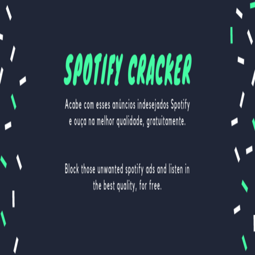
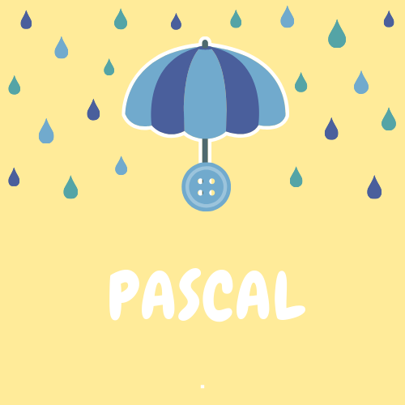

Alguns de meu projetos com comunidadades OpenSource:

Spotify ADS Cracker
Um projeto para teste de aprendizado em análise profunda e engenharia reversa e Injeção de memória, com uma comunidade crescente.
Pascal - Chuva
Projeto desenvolvido como algo divertido e criativo, com esse pensamento resolvi liberar o código no github.